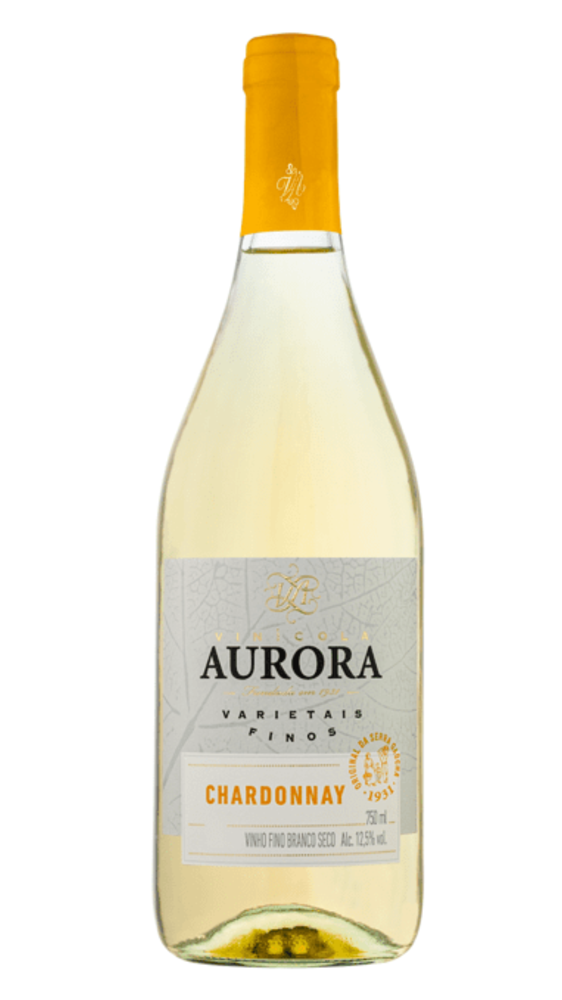
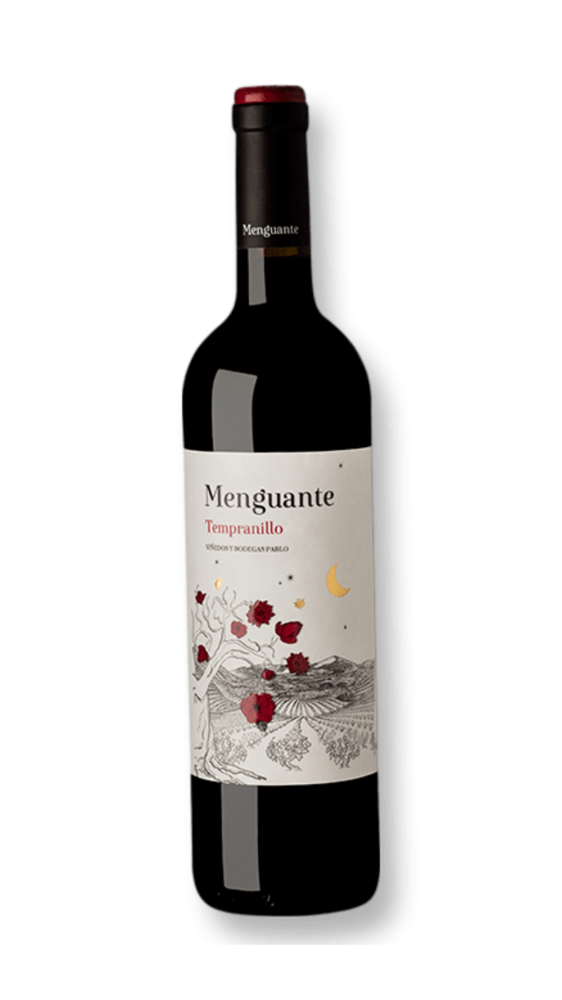
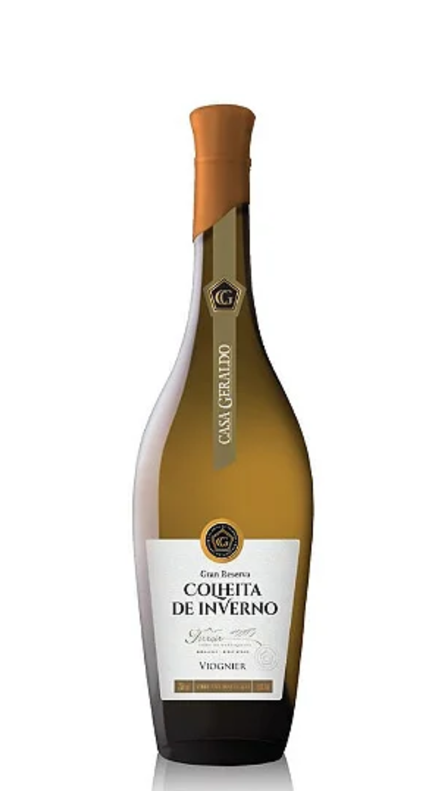

Sobre nós
Na Vinharia Agnello, somos apaixonados pela arte de produzir e oferecer vinhos
de alta qualidade. Com anos de tradição, selecionamos as melhores uvas e os mais
refinados processos de vinificação para entregar experiências únicas aos nossos
clientes. Aqui, cada garrafa conta uma história de dedicação, sabor e
autenticidade. Visite-nos e descubra o verdadeiro prazer de um bom vinho.
Nossa vinícola preza pela sustentabilidade e pelo respeito à natureza.
Utilizamos práticas responsáveis, desde o cultivo das videiras até a produção
dos vinhos, garantindo não apenas qualidade, mas também um impacto positivo no
meio ambiente. Acreditamos que um vinho de excelência nasce do equilíbrio entre
tradição, inovação e cuidado com o planeta.
Além da nossa seleção de rótulos premiados, oferecemos experiências exclusivas
para nossos visitantes, como degustações guiadas, visitas aos vinhedos e
workshops sobre harmonização. Seja para celebrar momentos especiais ou
simplesmente apreciar uma boa taça, a Vinharia Agnello é o lugar ideal para quem
valoriza história, sabor e qualidade.
Produtos
-

Vinho Chardonnay
Um vinho branco elegante, com notas frutadas e um leve toque de baunilha. Perfeito para acompanhar pratos leves e momentos especiais.
-

Vinho Tempranillo
De coloração intensa, oferece aromas de frutas vermelhas e especiarias. Ideal para harmonizar com carnes vermelhas e queijos curados.
-

Vinho Viognier
Com aroma floral marcante e sabor suave, este vinho branco encanta pelo equilíbrio e frescor. Ótimo para peixes, frutos do mar e queijos leves.